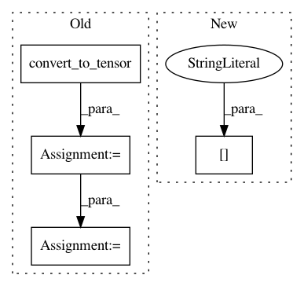

a0a14ed743f511932db8234b2521a9eebfecde31,tests/ludwig/models/modules/test_encoder.py,,encoder_test,#Any#Any#Any#Any#Any#Any#Any#,69
Before Change
// Run the encoder
input_data = tf.convert_to_tensor(input_data)
dropout_rate = tf.convert_to_tensor(dropout_rate)
is_training = tf.convert_to_tensor(False)
hidden, _ = encoder(
input_data,
regularizer,
dropout_rate,
is_training=is_training
)
// Check output shape and type
assert hidden.dtype == output_dtype
assert hidden.shape.as_list() == output_shape
After Change
// Run the encoder
input_data = tf.convert_to_tensor(input_data)
hidden = encoder(
input_data,
training=False
)["encoder_output"]
// Check output shape and type
assert hidden.dtype == output_dtype
assert hidden.shape.as_list() == output_shape
In pattern: SUPERPATTERN
Frequency: 3
Non-data size: 4
Instances
Project Name: uber/ludwig
Commit Name: a0a14ed743f511932db8234b2521a9eebfecde31
Time: 2020-07-09
Author: w4nderlust@gmail.com
File Name: tests/ludwig/models/modules/test_encoder.py
Class Name:
Method Name: encoder_test
Project Name: OpenNMT/OpenNMT-tf
Commit Name: 352ebffaa5bd74a454c3b2b10121b2d959ade2fc
Time: 2017-08-22
Author: guillaume.klein@systrangroup.com
File Name: opennmt/models/sequence_tagger.py
Class Name: SequenceTagger
Method Name: _build
Project Name: Microsoft/nni
Commit Name: 55b557f17385ca10b8a3e8fb8bbb0d3799906db5
Time: 2019-11-20
Author: 38930155+chicm-ms@users.noreply.github.com
File Name: src/sdk/pynni/nni/compression/tensorflow/builtin_pruners.py
Class Name: FPGMPruner
Method Name: _get_min_gm_kernel_idx